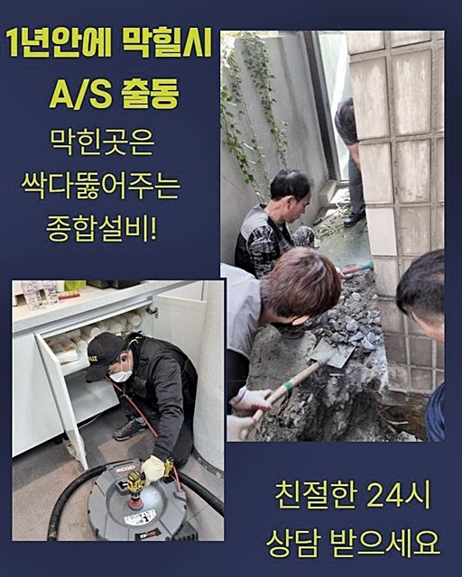
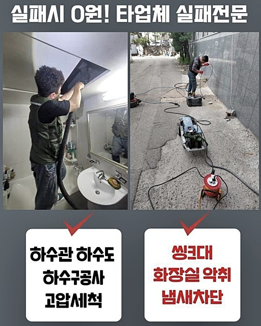
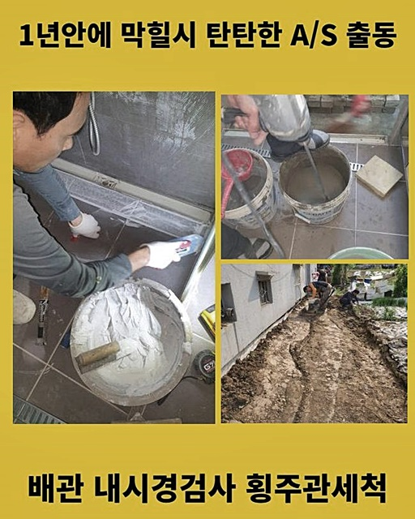
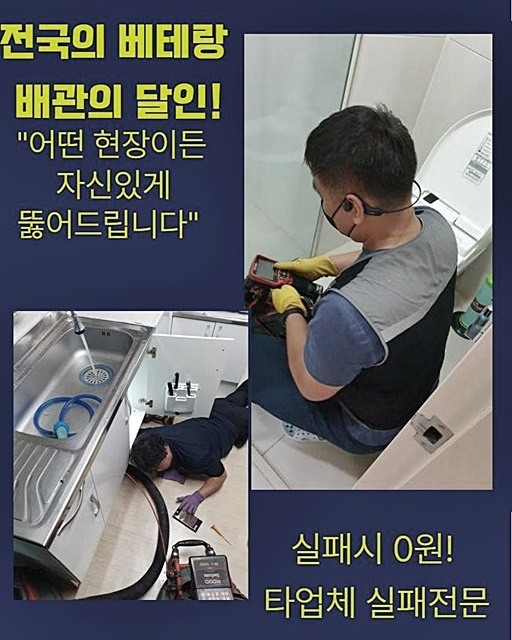
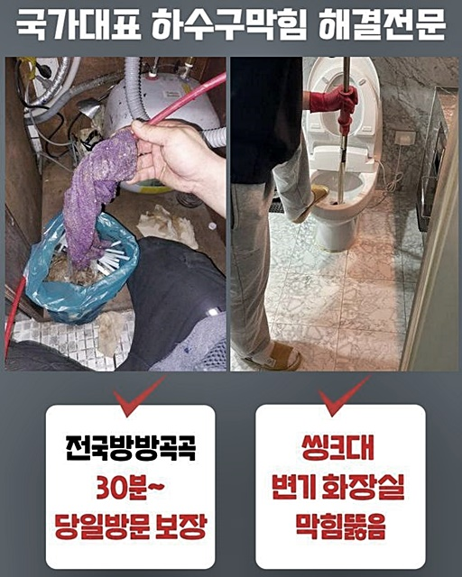
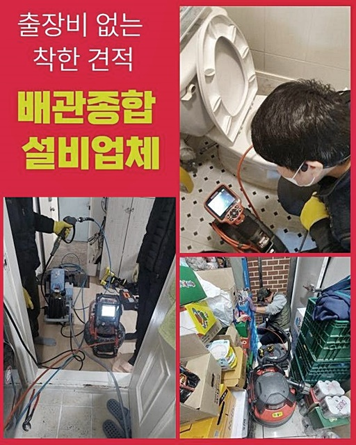

🏠 송파구 문정동하수구막힘 문정2동 냄새차단 배관전문
용인시 처인구 배관막힘 전문 시공 후기

📋 작업 개요
- 위치: 용인시 처인구, 수원시 영통구, 화성시 동탄
- 서비스 유형: 배관막힘, 내시경점검
- 작업 일시:
- 업체명: 하수구수사대 (010-5615-2118)
🔍 문제 상황
송파구 문정동하수구막힘 문정2동 냄새차단 배관전문
일상생활시 배수관은 필수적인 존재인데요
갑작스럽게 배수구가막혀 정상적으로 배수가되지 않으면 곤란할겁니다
인터넷검색을 통하여 해결방식을 탐색하여 조치를 취할순있어도 이물로인해 꽉 막혀버린경우 전문인의 도움을통하여 해결해보는것이 가장알맞은 선택이라고할수있죠
저희쪽에 문의주신분들중에 급작스레 발생한 막힘현상으로 상당한불편함을 경험하신분도 계셨어요
이분은 세대리모델링 공사가이루어진지 얼마지나지 않았는데 이러한일이 발생된건지 당황스러워하셨답니다
빠르게 해결해줄것을 요청하였고 저희들은 최첨단장비를 준비하여 빠른출동으로 내방드렸어요
대부분으로 가정집에선 욕실이나 싱크대배관등 배수구막힘문제가 빈번히 발현되고있답니다
이런경우에는 다양스러운 곤란함이 발생할수있죠
씽크대에서 물을이용하기 어렵다면 일상이어려운 상태로 이어지게될텐데요
해결해드리기위하여 고객님은 주말시간에 내방하기를 바라셨고 원하시는 시간에맞춰 내방했습니다
저흰 공휴일과 주말도 포함해서 늦은밤이더라도 작업을 진행할수있으므로 시간관계없이 연락만주신다면 내방할준비가 되어있답니다

🔎 원인 분석
💡 전문가 진단: 정밀 진단 장비를 사용하여 슬러지의 고착 여부를 판명하고 타격/세척 작업을 실시했습니다.
며칠전부터 배수상황이 느려졌으며 그저께부터 확실하게 막히게되었음을 알려주셨죠
셀프적인 방법으로 뚫어보고자 했으나 일시적으로만 뚫렸으며 동일한현상이 계속해서 발생하고있다고 알려주셨어요
신속히방문해서 싱크대배관을 살펴보았어요
막혀버렸다보니 잔해물질들도 쌓이고쌓여 역류문제로까지 이어진것으로 볼수있었죠
하수구가 막혀버리게된 원인을파악한뒤 해결해보고자 내시경장비를 활용하여 하수구안쪽을 살펴봤습니다
하수구입구쪽에 오염물질들은 쉽게제거가 가능했지만 깊숙히 위치하고있는곳에 있는것은 샤프트기를 이용하여 바깥에 꺼내야했어요
불행중 다행이었던것은 오랜시간동안 퇴적된상태가 아니었으므로 깔끔한제거가 가능했습니다
자세히 점검해봤더니 막고있었던 원인의물체는 장판조각인것이 파악되었는데 이것들이 이곳을통해 왜나왔는지 알수가없었죠
의뢰자분도 오염물의정체를 모르시는 상태였으며 이물질을 보시고는 놀라시는것을 볼수있었어요
샤프트도구를 활용하여 분해과정을 진행할땐 작업자분의 실력또한 중요하다고할수있죠
안심해도좋아요 문제없이 확실히 처리할것을 확인할수있어요!
다음장소에 방문해서 점검해보았는데 하수도에서 역류문제가 발발되고 있었네요
막힘증세를 신속하게 뚫으려면 확실한원인을 알아내야합니다

🔧 작업 과정
여러번이고 알려드리지만 물이시원히 흘러나가야하는데 역류가일어나면 영업장이나 가정에서든지 곤란함을 초래할수있죠
문제를보니 하수구내부에서 발생한걸로 알수있었죠
다양한 작업경력과 노하우를통해 최첨단장비들을 사용해서 세심한 작업으로 진행하였어요
내시경과 플렉스샤프트와 같은 전문장비들을 사용할경우 하수도내부와 오염상태까지 확실하게 파악이가능하고 이과정을통해 착수하기전 중요한정보들을 얻을수가있어요
이물이축적되었다면 고약한냄새를 발생시키기에 신속대처를 해야합니다
배관속을 살핀뒤 정확한조치를 취하여 막힘현상이 해결되었어요
두번째현장은 씽크대막힘이 발현된곳인데 신속하게 해결해줄것을 원하셨습니다
음식조리나 설거지를해볼때 물이흐르지않고 넘치기까지하는 상황임을 전해주셨죠
고객의 일상편의를 불편하게하는 역류문제가 지속적으로 발현될경우 2차적인 문제로 이어질수있기에 신속대응을하려고 막힌이유를 알아내기위해 작업에 착수하기로했죠
배관내시경끝에는 카메라하고 랜턴까지 달려있기에 하수구내부까지 점검해볼수있죠
싱크대막힘에서 자주보이는 기름슬러지의경우 제거해내기가 어렵습니다
이런상태에선 물을통해 중화시켜준뒤 석션장비를 활용하여 흡입하는방식을 진행할수있어요
고착된 이물질들이 쌓이게되었다면 플렉스샤프트로 이물을분쇄하고 빨아올릴수있죠
하수구길이가 깊어도 청소할수있습니다
내시경기를 투입하여 구부러진부분이나 꺾인곳까지 파악이가능하며 나머지장비로 이물을흡입해 정상적인 물흐름으로 만들어줍니다
고객님에게 작업내용을 전달해보는것도 중요하답니다
배수관이 막히는것을 방치하게될경우 심화되는 현상으로 연결되서 막심한피해를 보실수도있으므로 조속한 조치를취하실것을 추천드리겠습니다
직접뚫어보고자 날이선 물체들로 하수구내부에 집어넣거나 주변에서 쉽게구하는 클리너제품을 이용한다면 일시해결로만 이어지게될겁니다
전문업체를 호출해서 무슨원인으로 막히게되었는가 정확하게 파악하여 알맞은조치를 취해야해요
그러므로 배관막힘은 신속하고 전문적인조치가 필요하겠습니다


✅ 작업 완료
일을쉽게 생각하시지말고 막히는징조를 보일때 조치해보시는걸 권고드려요
성의를다한 작업으로 갖가지의 막힘문제들을 완벽하게 처리할것을 약속드릴게요
하수구와관련해 문제가있을경우 문의바래요
전국어디든지 60분내로 도착이가능하며 작업계획에있어 일러드린뒤 착수하고있기에 우려하지마세요!
이밖으로도 궁금한게있으면 아무때나 전화주셔서 여쭈어도 괜찮으므로 마음편히 연락주신다면 상세한응대로 진행할게요!
하수구와관련한 문제들 저희에게 맡겨서 처리하시는건 어떨까싶습니다



⚠️ 하수구 배관 막힘 예방 및 관리 가이드
- ✅ 머리카락, 비닐, 물티슈 등 물에 분해되지 않는 이물질은 절대 흘려보내지 마세요.
- ✅ 기름기 많은 식기는 설거지 전 키친타올로 먼저 기름때를 닦아내세요.
- ✅ 주기적으로 배수구에 뜨거운 물을 가득 부어주어 유지방 고착을 방지하세요.
- ✅ 작업 후 1년 이내 재발 시 무상 A/S 보증 서비스를 제공합니다.
💡 핵심 정리
- 확실한 장비 작업(내시경 점검 및 샤프트 스케일링)으로 원인을 뿌리 뽑습니다.
- 작업 후 1년 이내에 동일한 부위 재발 시 100% 무상 A/S 서비스를 보장합니다.
- 서울 · 경기 · 인천 전 지역에 24시간 언제든 긴급 출동할 수 있도록 항시 대기 중입니다.
❓ 자주 묻는 질문 (FAQ)
🚨 용인시 처인구 배관막힘 문제로 고민이신가요?
정확한 원인 진단과 확실한 시공으로 재발 없는 해결을 약속드립니다.
24시간 긴급 출동 | 서울 · 경기 · 인천 전지역 | 1년 내 재발 시 무상 A/S